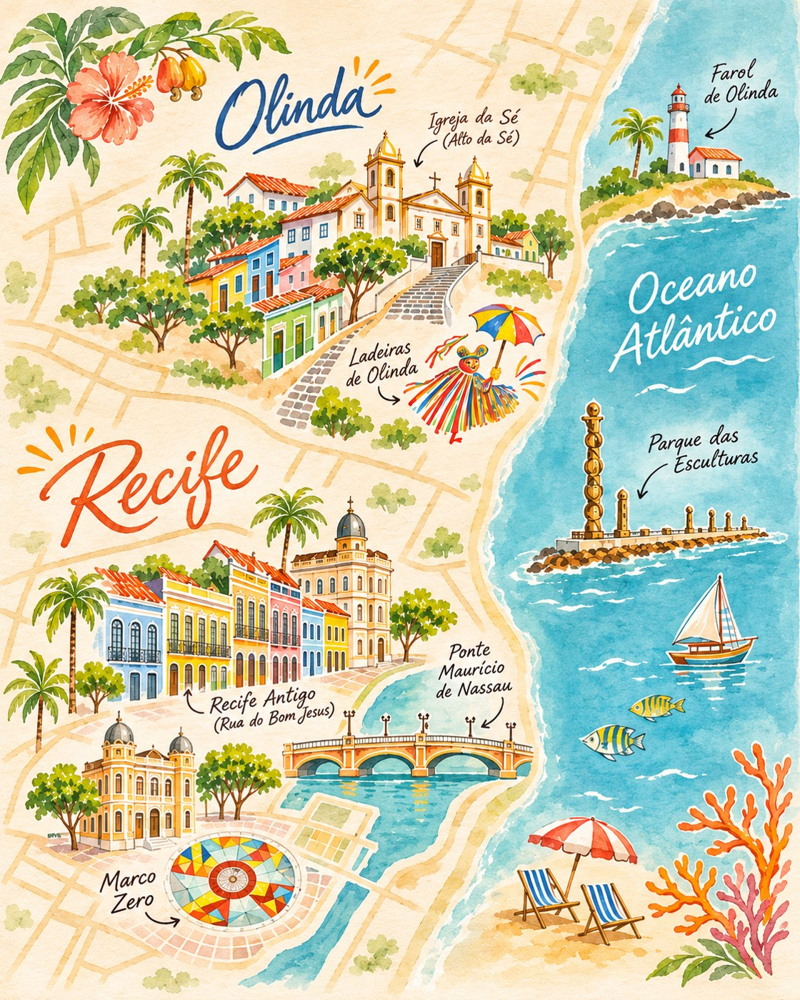
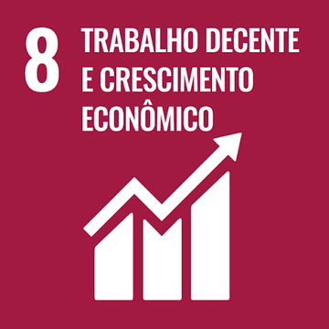
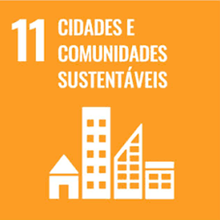
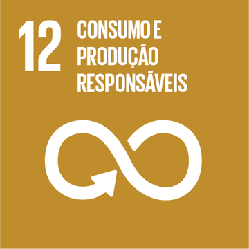
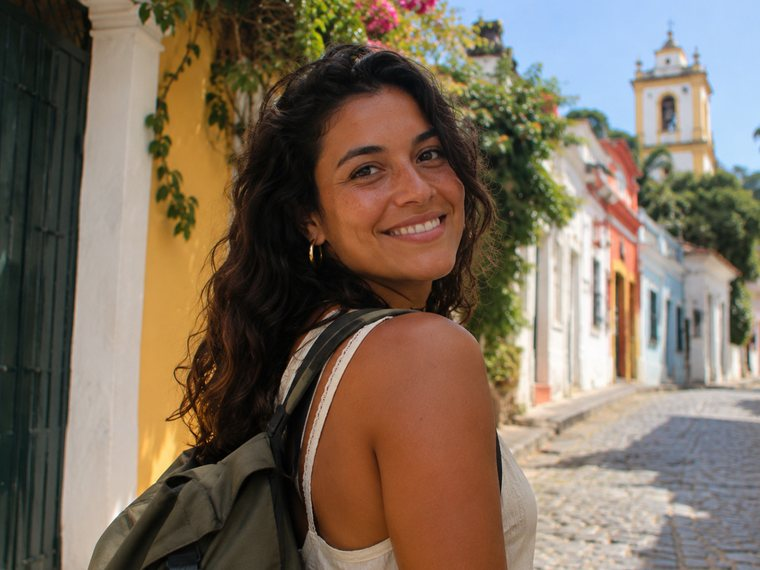
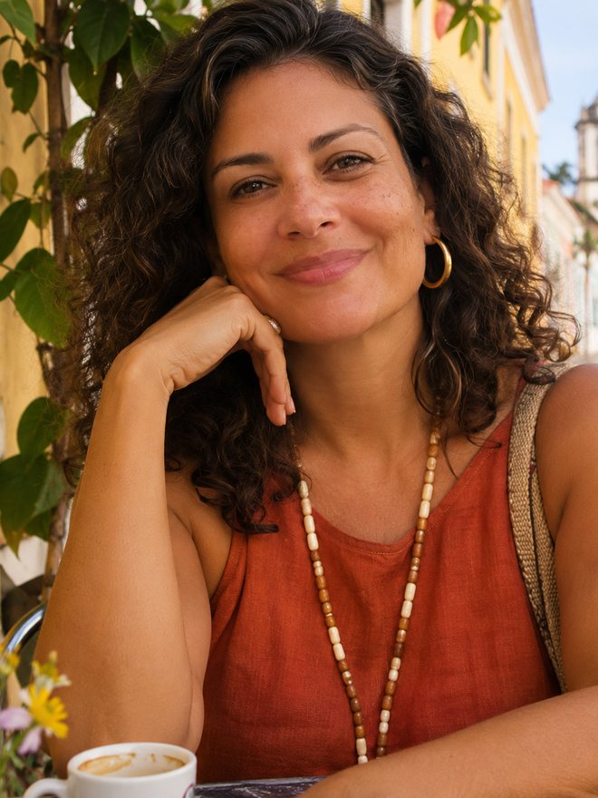

elementos do serviço nesta cena
um olhar sobre Pernambuco
Descubra a cidade por quem vive nela.
Rolês indicados por moradoras, com contexto para decidir e liberdade para mudar de ideia.
Eulália Albuquerque · Maria Clara Carvalho · Rodrigo Pablo
UFPE · DD032 Design de Serviços · novembro de 2026

role para começar ↓
01Contexto e oportunidade
Recife e Olinda cabem muito além do cartão-postal.
um diário de viagem, não um catálogo
Um forró de chão batido num casarão do Poço da Panela. Um bar de jardim na Praça de Casa Forte que fecha quando acaba a conversa. A feira que só acontece de manhã e some ao meio-dia. Esse repertório raramente chega a quem passa poucos dias na cidade, porque ele não está no roteiro, está no bairro. A Coral começa por aí, e por um público específico: mulheres brasileiras de 22 a 28 anos, viajando sozinhas ou com uma companhia.
das viagens dos brasileiros são dentro do país.
IBGE, 2024das brasileiras já viajaram sozinhas.
MTur e UNESCO, "Mulheres que Viajam Sozinhas", 2026dos viajantes visitam apenas 10% dos destinos turísticos do mundo.
Murmuration e National Geographic, 202401Contexto e oportunidade
Por que esse serviço importa
Os Objetivos de Desenvolvimento Sustentável são 17 metas globais adotadas pelos países membros da ONU em 2015, com prazo até 2030, para orientar o desenvolvimento econômico, social e ambiental. A Coral se conecta a três deles.



02Problemática
Descobrir um rolê é fácil. Decidir se dá pra ir é que é o problema.
o trabalho que ela faz sozinha
“Preciso saber se é seguro na ida para o lugar e na volta para o hotel também.”
Entrevista, pesquisa com usuárias · DD032, 202602Problemática
62,1%
seis em cada dez mulheres entrevistadas já deixaram de viajar por questões de segurança, e 60,6% relataram insegurança durante uma viagem.
MTur e UNESCO, 2026 · 2.712 mulheres
MTur e UNESCO, 2026 · 2.712 mulheres
A insegurança não é um detalhe da jornada, é a condição dela.
Quando o entorno é desconhecido, decidir sair exige um trabalho de pesquisa que a viajante faz sozinha, cruzando fontes que não conversam entre si. É esse trabalho que a Coral assume.
o plano B que virou rotina
Avisa alguém por onde andaquestionário
Refaz a rota no mapaentrevista · Letícia
Troca o rolê na ruaentrevista · Maria Luísa
02Problemática
Ecologia do serviço
Seis recortes para enxergar o serviço inteiro, e não só o aplicativo.
02Problemática
As quatro fricções
O que trava a decisão de sair, segundo as entrevistas e o questionário. São elas que o serviço precisa resolver, uma a uma.
01Encontrar
As descobertas estão divididas entre TikTok, Instagram, mapas, blogs e indicação de conhecidos. Nada conversa entre si.
02Confiar
É difícil saber quem escreveu, de quando é e se aquilo é publicidade. Avaliação sem autoria não ajuda a decidir.
03Entender
Falta o entorno: como é a rua, se tem movimento, se dá pra ir sozinha e como é a volta à noite.
04Adaptar
Chuva, cansaço ou distância desmontam o plano, e refazer a pesquisa do zero custa a viagem inteira.
03Proposta única de valor
Curadoria de quem mora ali, com uma assistente para o imprevisto.
Para
mulheres brasileiras de 22 a 28 anos, viajando sozinhas ou em dupla por Recife e Olinda
A Coral entrega
rolês indicados por quem mora no bairro, com o contexto de entorno que falta para decidir
Diferente de
guias e avaliações anônimas, aqui a indicação tem autoria e a Maré refaz o roteiro quando o plano muda
03Proposta única de valor
Três compromissos
O que cada fricção da pesquisa virou dentro do serviço.
Indicado por quem mora ali
Cada rolê carrega o nome de quem recomendou e há quanto tempo essa pessoa vive no bairro. Confiança com autoria, não estrela anônima.
Contexto, não promessa
Iluminação da rua, movimento, opção de volta e segurança na porta. Informação para decidir, não uma garantia que o serviço não pode dar.
A Maré reorganiza
Choveu, cansou, mudou a companhia: a assistente propõe uma troca próxima e atualiza mapa e calendário, sem recomeçar a pesquisa.
03Proposta única de valor
Três movimentos
Como o serviço acontece, do primeiro acesso ao plano que muda no meio do caminho.
01
Descobrir
Catálogo curto e curado, em carrossel e vídeo curto, aberto sem login.
exemploforró de chão batido no Poço da Panela, sábado à noite
02
Decidir
Ficha com autoria da indicação, entorno, horário, custo e como é a volta.
exemplorua iluminada, movimento até tarde, volta por app em 12 min
03
Ajustar
A Maré agrupa por dia e distância e, quando algo muda, propõe uma troca perto.
exemplochoveu: feira coberta a 1,2 km, mesmo horário
04Demonstração
A Coral já pode ser navegada.
os quatro fluxos que o protótipo cobre hoje
- 01ExplorarCategorias e a trilha "Pra hoje à noite". Cada card mostra bairro, faixa de preço, selo e quem indicou.
- 02Ficha do rolêDepoimento da moradora, "O que fazer", "Bom saber", vídeos curtos e o checklist de entorno.
- 03Avaliações por tag"Ok pra ir sozinha", "Volta tranquila", "Espera longa", em vez de texto livre.
- 04MaréConversa sobre o mapa, com atalhos para reorganizar os rolês salvos.
gravação do protótipo · 41s em loop
05Representação gráfica da entrega do serviço
A jornada de Camila em oito cenas.
o problema, a descoberta, a experiência, a entrega e o resultado
o que Camila leva da jornada
O resultado não é ter achado um lugar.
É ter decidido com contexto, mudado de ideia sem perder a noite e devolvido isso para quem vem depois.
01Decidiu com contextoEntorno, autoria da indicação e horário na mesma tela, antes de sair de casa.
02Mudou de plano sem recomeçarA chuva trocou o rolê, não a noite: a Maré refez o roteiro em uma troca.
03Devolveu o que aprendeuDois toques de avaliação viram informação para a curadoria e para a próxima viajante.
Como chegamos até aqui
O percurso que levou ao serviço: o que a pesquisa mostrou, as decisões que vieram dela, os artefatos que organizaram o sistema e a forma como a Coral foi mudando ao longo do semestre.
01PesquisaQuestionário, entrevistas, benchmarking e matriz CSD.
02Personas e jornadaQuem decide, e em que ponto a decisão trava.
03Mapa do sistemaAtores, trocas e o que sustenta o serviço por trás.
04BlueprintFrontstage, bastidores e evidências físicas, etapa por etapa.
05Evolução do serviçoComo a Coral mudou de forma ao longo do semestre.
06Pesquisa com usuários
Inspiração, validação e autonomia aparecem juntas.
o que ouvimos e o que isso decidiu
23mulheres no questionário
Avisar alguém por onde anda apareceu como prática recorrente antes de sair.
07concorrentes analisados
Nenhum reúne autoria da indicação e contexto de entorno na mesma tela.
02estudos de base
MTur e UNESCO (2026) e Murmuration e National Geographic (2024).
o que a pesquisa organizou depois
Matriz CSDPersonasJornada do usuárioEcologia do serviço
07Pesquisa com usuários
Matriz CSD
o que sabíamos, o que apostamos e o que ficou em aberto
✓
Certezas
3Descoberta local pesa mais já no destino
app aberto, sem login
Avaliação de outras mulheres vale mais que publicidade
autoria visível no card
Segurança percebida decide se o roteiro muda
~
Suposições
3Opção demais trava a decisão
lista curta e curada
Confiança vem de identificação com quem indica
nome e tempo de bairro
A IA concorre com amigos na hora do roteiro
Maré só sobre a base curada
?
Dúvidas
322 a 28 é minoria entre as viajantes solo?
A confiança muda entre solo e acompanhada?
Pesquisar é prazer ou cansaço?
Recorte da matriz do board da equipe. MTur e UNESCO (2026): a faixa de 25 a 34 anos concentra 21,7% das viajantes solo.
08Benchmarking
Nenhum concorrente cobre tudo.
sete serviços comparados em seis critérios
baixomédioalto
| Serviço | Curadoria humana | Prova social | Voz local | Fora do roteiro | Rolês do dia a dia | Participação |
|---|
As quatro colunas destacadas são o espaço que nenhum concorrente ocupa inteiro. É onde a Coral se posiciona.
09Síntese da pesquisa
Do que se repete ao que dá para fazer.
Padrõeso que se repete
Descobre em uma rede, confirma em outra.
Segurança percebida decide se o roteiro muda.
Confia mais em outra mulher que em publicidade.
Necessidadesnas palavras delas
“Preciso saber se é seguro na ida… e na volta para o hotel também.”
“Mesmo cansada, preciso decidir muito rápido.”
“Conforto sem pagar preços de turista.”
Oportunidadeso que o serviço assume
Descoberta com região, horário e entorno.
Apoio antes da viagem e depois da chegada.
Dizer por que cada rolê é recomendado.
10Personas
Três viajantes, três dores.
o eixo que as separa é a companhia de viagem, que é também o filtro do app

Júlia
22 anos · com uma amigaDescobre no TikTok, decide na rua.
Descoberta socialAutenticidade
Marina
25 anos · com parceiroPlaneja antes, ajusta conforme o humor.
Planejamento flexívelVariedade
conduz o storyboard
dor exclusivaSegurança na ida e na volta, e saber quem indicou.
Camila
28 anos · sozinhaMuda o trajeto sozinha, se precisar.
AutonomiaContexto localConfiança
11Personas
O outro lado do serviço.
sem quem indica, não existe curadoria

proto-personaJoana
moradora do Poço da Panela há 12 anosO que fazIndica os rolês que frequenta de verdade e aparece nomeada no card.
Por que indicariaPor gosto, e para ajudar pequenos negócios do bairro.
O que espera em trocaReconhecimento no app e algum cupom.
12Jornada do usuário
Oito etapas e duas quedas.
A curva mostra o estado emocional ao longo da viagem. As duas quedas, na busca por atividades e nos ajustes durante a estadia, são exatamente onde a Coral entra.
antes da viagem
01
InspiraçãoInspirações dispersas entre apps e salvos
02
Planejamento inicialOrçamento limita o que cabe na viagem
03
Busca por atividadesExcesso de opções parecidas trava a decisão
04
Validação e confiançaDifícil separar review sincero de patrocinado
05
Montagem do roteiroIA erra rotas, horários e endereços
durante
06
Ajustes na estadiaCansaço e noite cortam atividades distantes
07
Vivência da experiênciaHipervigilância constante quando está sozinha
depois
08
Pós-experiênciaPouca motivação para avaliar nas plataformas
12Jornada do usuário
A mesma jornada, três decisões diferentes.
Júliaetapa 04 · validação
Valida em dupla
Manda o link para a amiga e espera resposta. O rolê precisa ser compartilhável.
Marinaetapa 05 · montagem
Encaixa no que já existe
O roteiro já está meio montado. A descoberta precisa caber num espaço livre.
Camilaetapas 06 e 07 · estadia
Decide sozinha, na hora
Sem ninguém para dividir o risco: entorno e volta precisam estar na tela na hora da decisão.
13Mapa do sistema
Quem participa, e o que circula.
filtre por tipo de fluxo: informação, dinheiro ou material
13Mapa do sistema
Três frentes sustentam o serviço.
Viajantes
- Exploram sem login
- Salvam e organizam com a Maré
- Contratam extras e avaliam depois
Parceiros locais
- Moradoras indicam e ganham pontos
- Restaurantes, transfers e guias atendem
- Pagam comissão quando o rolê é usado
Time da plataforma
- Cura indicações e vídeos
- Publica e mantém as páginas
- Revisa sinalizações e gere parcerias
14Blueprint do serviço
Da tela aos bastidores, etapa por etapa.
oito etapas, das primeiras buscas à avaliação
15Proposta única de valor
As quatro perguntas, respondidas.
o detalhamento da promessa que abriu a apresentação
o que entra no serviço
Recomendações de locaisVídeos curtosMotivo da indicação
Entorno e selo contextualRoteiro por dia e distânciaAjustes por clima e horário
Transfer com motorista mulherRolês em grupo com guiaAvaliação e pontos
16Evolução do serviço
Como a Coral mudou ao longo do semestre.
01Uma lista de rolês locais
O ponto de partida era um catálogo de recomendações de bairro, no modelo das plataformas de avaliação.
02A companhia virou o eixo
A pesquisa mostrou que viajar sozinha, em dupla ou acompanhada muda a dor. Cada persona passou a carregar a sua.
03O serviço ganhou assistente e rede
Da ideação saíram a Maré, a rede de moradoras que indicam e ganham pontos, e os extras pagos à parte.
04Virou sistema, e protótipo
A ecologia foi revista e desdobrada em mapa do sistema, blueprint e um protótipo navegável.
Descubra a cidade por quem vive nela.
Um serviço de descoberta local para Recife e Olinda, construído a partir do que mulheres que viajam disseram precisar: contexto para decidir, autoria em quem indica e liberdade para mudar de ideia.
Abrir o protótipo ↗
materiais do projeto
Repositório do projetoVisão do serviço, pesquisa, personas e decisões
Board de Design de ServiçosDesks, matriz CSD, concorrentes, personas e jornada
Brand book · identidade editorial v02Paleta, tipografia, grafismos e tom de voz
Entrevistas e questionárioMaria Luísa Marques, Letícia Helena e 23 respondentes
Fontes dos dados
IBGE (2024); MTur e UNESCO, "Mulheres que Viajam Sozinhas" (2026); Murmuration e National Geographic (2024); Think with Google Brasil (2022); Expedia Traveler Value Index (2022).